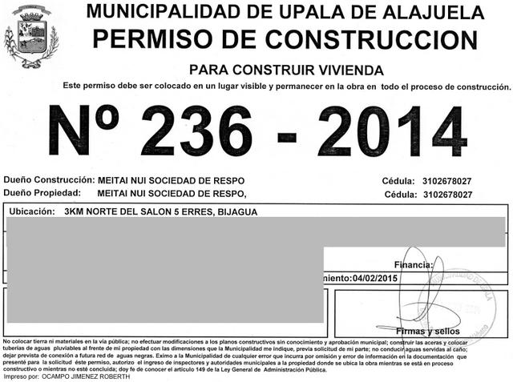

|
S'installer au Costa Rica, jour après jour... Pour les éventuels candidats à l'expatriation, voici un petit aperçu de notre expérience. |
20/02/2015 - Etape n°18: inscrire les enfants au collège, épisode 4
15/02/2015 - Etape n°17: inscrire les enfants au collège, épisode 3
15/10/2014 - Etape n°16: inscrire les enfants au collège, épisode 2
Voila une étape difficile. Alors que nos enfants de 12, 13 et 15 ans fréquentent le collège a mi-temps depuis quelques mois pour un échange interculturel (voir étape 8 ci-dessous), nous avons entamé les démarches pour régulariser leur situation, afin qu'ils puissent suivre les cours régulièrement et officiellement dès l'année prochaine.

Les enfants ne sont pas officiellement inscrits mais ils ont quand meme l'uniforme
En effet, si l'on veut que leur travail assidu soit couronné d'un quelconque papier officiel, sésame obligé pour envisager d'éventuelles études supérieures, il faut qu'ils soient 'immatriculés'. Bien qu'au Costa Rica l'instruction soit obligatoire et l'accès à l'enseignement un droit constitutionnel, il est apparu qu'inscrire nos enfants à l'école relevait de la gageure, tout simplement parce que nous n'avons aucun document officiel émanant de l'enseignement belge (puisque nos enfants n'y ont que peu mis les pieds, occupés qu'ils étaient à faire le tour du monde en voilier avec nous).
Nous avons été voir la direction régionale de l'éducation, nous avons organisé 15 réunions avec le directeur de l'école, avec les professeurs, avec les assistants pour finir par découvrir que la seule manière d'inscrire nos enfants au collège passait par l'obtention d'un certificat d'etudes primaires à l'issue d'un examen. En cas de succès, ils pourraient officiellement s'inscrire en première. Evidemment, cet examen se déroule en espagnol et doit être organisé expressément pour eux par l'école primaire (les examens officiels destinés aux 'vieux' ticos qui souhaitent eux aussi régulariser leur situation ne pouvant pas faire l'affaire, pour de mystérieuses raisons).
Après un dernier round de réunions pour connaître la matière exacte faisant l'objet dudit examen, et quelques heures de plus pour obtenir les livres s'y rapportant, nous sommes maintenant dans l'attente d'une date officielle. Si les enfants réussissent, ce que leur niveau d'espagnol actuel me laisse espérer, il nous restera à organiser (c'est à dire à mettre la pression sur le corps professoral du collège pour qu'il le mette sur pied) un examen dit d'ubicacion, servant à déterminer le niveau de nos enfants et, par conséquent, la classe qu'ils pourraient régulièrement fréquenter lors de la rentrée de février 2015.
On notera qu'il eut été plus simple de produire un certificat officiel belge, traduit en espagnol et tamponné par l'ambassade belge à Panama faisant fonction pour le Costa Rica. Mais pour cela, il eut fallu que nos enfants fréquentassent un établissement belge pendant au moins un cycle (car figurez-vous qu'il est extrêmement difficile d'obtenir quoi que ce soit d'officiel - genre certificat de fin de première secondaire - si ce n'est pas expressément prévu - genre CEB)
05/08/2014 - Etape n°15: obtenir le permis de construire
En 8 jours à peine, notre dossier a été accepté et, moyennant la modique somme de +/- 1% du montant budgeté de la construction de la maison, nous avons obtenu le permis de construire.

LE permis de bâtir (MEITAI NUI, c'est nous!)
Comme prévu, l'obtention du permis fut assez facile, notamment grâce à l'aide de l'ingénieur qui s'est montré fort efficace pour faire en sorte que nous soyons en règle et en heure. Il semble fort utile d'avoir ses entrées à la maison communale si l'on veut faire avancer son dossier rapidement.
28/07/2014 - Etape n°14: déposer le permis de construire
Dès l'acquisition de la finca, j'avais entamé la création des plans de la maison grâce à un gratuiciel 3D trouvé sur Internet. En juin, mes plans étaient prêts et je les avais remis à l'ingénieur local pour qu'il les complète et les rende 'officiels'.
Aujourd'hui, le processus de validation par le collège des architectes s'est terminé et les plans approuvés me sont revenus afin que je puisse les déposer à la municipalité pour obtenir le permis de construire. Nantis des précieux plans, des plans cadastraux, de nos passeports, d'une personaria (un papier qui dit que nous sommes bien propriétaires de la société qui possède la finca), nous sommes allés à la maison communale. Nous y avons déposé les papiers, en échange de quoi, nous avons pu payer l'impôt foncier ainsi que l'assurance obligatoire (1,25% de la valeur de construction déclarée) pour couvrir les frais liés à d'éventuels accidents du travail sur notre chantier.
Maintenant, on n'a plus qu'à attendre le permis et l'on peut commencer la construction (qui, en pratique, peut commencer dès maintenant, l'obtention du permis n'étant plus qu'une formalité quand les plans ont été approuvés par le collège et les impôts payés).
09/07/2014 - Etape n°13: obtenir la résidence, remise des dossiers
Au terme d'un parcours de combattant truffé d'obstacles plus infranchissables les uns que les autres (réalisé surtout en Belgique mais qui a quand même nécessité un contingent auxiliaire basé en République Démocratique du Congo), nous avons finalement pu introduire une demande de résidence en bonne et due forme pour les 5 membres de la famille.
Le dossier a été accepté pour étude et notre argent aussi(près de $5.000 pour la famille, en ce compris les honoraires d'avocat). Maintenant, nous n'avons plus qu'à attendre les observations et compléments d'information que ne vont pas manquer de requérir les préposés de l'administration locale.
18/06/2014 - Etape n°12: revenir au Costa Rica
C'est bien beau de quitter le Costa Rica en avion, encore faut-il revenir. Comme notre billet est un aller-retour départ Costa Rica, notre billet de retour est considéré comme un aller simple au Costa Rica. Vous me suivez? Je l'espère. En tous cas, les compagnies aériennes ne laissent pas les étrangers arriver au Costa Rica sans billet de retour vers leur pays d'origine. Autrement dit, nous devions disposer des billets retour sur l'Europe pour pouvoir embarquer sur le vol vers San José.
Heureusement, en tant que marins au long cours dans une autre vie, nous étions au courant de ces petites mesquineries pour les avoir expérimentées en Nouvelle Zélande. Nous avions donc pris la peine d'acheter des billets de bus San José-Panama avant de quitter le Costa Rica ET nous avions convaincu une connaissance dont le bateau était justement à Panama de nous inviter pour une traversée retour sur la France. Grâce à ce stratagème et au fait que, contrairement à tous les règlements, personne ne nous a jamais demandé notre billet retour, nous avons débarqué au Costa Rica sans aucun problème.
Sans doute est-ce dû au fait que nous faisions escale à Atlanta... Bref, tout s'est bien passé. Ca valait bien la peine de s'exciter... En outre, notre dossier de demande de résidence (cf étape 9 ci-dessous) a été accepté pour étude. En attendant que les autorités suprêmes se prononcent, nous pouvons rester au Costa Rica aussi longtemps que nous le souhaitons!
11/04/2014 - Etape n°11: quitter le pays après 3 mois
Et voilà, nous voici arrivés au terme des 3 mois gracieusement octroyés aux visiteurs de l'Union Européenne. Maintenant, il faut quitter le territoire sous peine d'entamer un séjour illégal. Il est vrai qu'en 3 mois nous avons réalisé un travail titanesque mais nous n'avons guère visité. C'est pourquoi nous reviendrons...
En attendant, avant de prendre le vol retour sur Bruxelles, nous avons rencontré notre avocat préféré à San José afin de finaliser l'achat de la propriété. Comme nous l'achetons via une société de droit costaricien, nous avons confié mandat à l'avocat afin de réaliser les paperasseries nécessaires sans devoir être présents physiquement.
On en a profité pour apprendre que les droits d'enregistrement s'élevaient à 3.8% du prix d'achat.
30/03/2014 - Etape n°10: obtenir la résidence, phase préparatoire
Il existe différentes voies pour obtenir la résidence au Costa Rica. Nous avons opté pour la voie sud, appropriée à une ascencion hivernale: elle consiste à obtenir le statut d'investisseur, grâce à un placement supérieur à $200K et de nature à favoriser le développement du pays.
Evidemment, il ne suffit pas de dépenser votre argent. Il faut aussi accumuler des tas de documents, dont un acte de naissance authentique, ce qui n'est pas aisé pour Cécile, qui a eu la malencontreuse idée de naître au Zaïre, pays qui n'existe plus (du moins si l'on se fie au système informatique en vigueur dans la plupart des administrations).
Les documents belges doivent en outre être munis d'une apostille, c'est-à-dire estampillés par le Ministère belge des Affaires Etrangères, et envoyés chez nous à Bijagua, ce qui ne va pas sans poser quelques problèmes.
En effet, croyez-le ou non, mais il n'existe pas de poste au Costa Rica, du moins pas dans le sens où on le conçoit chez nous. Il n'y a pas non plus d'adresse, ni de nom de rue. Je ne sais pas laquelle de ces deux situations a généré l'autre mais toujours est-il que pour vous faire envoyer du courrier, il faut disposer d'une boîte postale dans la grande ville la plus proche, seule à disposer d'un établissement postal. Et pour les factures me direz-vous (téléphone, électricité, eau, etc)? On les reçoit par email. Quand Internet fonctionne... Et ceux qui n'ont pas Internet? Il vont au Super Païka (ou à la banque) une fois par mois, où ils trouvent un guichet électronique permettant de faire les paiements et de disposer des reçus. D'autres questions?
8/03/2014 - Etape n°9: l'achat de la propriété
Une fois acceptée votre proposition financière, il convient de virer l'argent sur votre compte costaricien. Pour ce faire, rien de plus simple: il suffit de demander à votre banque en Europe de transférer de l'argent ici. Dans cette optique, nous sommes allés voir le gérant de la banque de Bijagua, afin qu'il nous communique les instructions de paiement.
Et là, grosse surprise: le Costa Rica souhaite (assez habilement il faut le dire) se soustraire aux trafics en tous genres, en particulier celui de la drogue qui migre de Colombie vers les USA. La législation est assez stricte pour les transferts supérieurs à 10.000$ (ce qui sera le cas pour notre finca de 40 Ha, malgré la négociation serrée que j'ai menée). Il nous faut prouver l'origine des fonds et la possession véritable.
Concrètement, il faut démontrer l'origine de notre fortune (dans notre cas, la vente du bateau) et posséder un document de la banque certifiant que nous sommes les propriétaires du compte, avec un relevé d'activité des 6 derniers mois. Il faut les documents originaux, accompagnés d'une traduction littérale en espagnol, évidemment.
Autant dire que le transfert ne se fera pas dans les prochaines heures...
10/02/2014 - Etape n°8: l'école des enfants
Lorsque nous nous sommes présentés à l'école dans le tumulte caractéristique d'une rentrée des classes, nous ne savions pas si l'effervescence observée était coutumière ou si nous en étions la cause.
Nous nous sommes frayé un chemin jusqu'au bureau du directeur de l'établissement secondaire afin d'inscrire les enfants. Peut-être était-ce notre espagnol approximatif ou la singularité de notre démarche... toujours est-il que le directeur mit plusieurs minutes avant de comprendre ce que nous faisions là. Il faut dire qu'il n'est pas fréquent de voir débarquer des étrangers au collège de Bijagua pour y inscrire leur progéniture.
Les choses devinrent franchement surréalistes quand nous expliquâmes que nous avions navigué durant les cinq dernières années, ce qui fait que les enfants n'avaient pas beaucoup fréquenté l'école (sauf en NZ mais était-ce de nature à clarifier notre démarche?). En conséquence, outre le fait qu'ils ne parlent pas un mot d'espagnol, nos braves enfants n'ont pas non plus le moindre diplôme officiel qui permettrait de faire valoir une quelconque 'équivalence'. Curieusement, le directeur trouvait notre situation et notre entreprise fort sympathique.
Qu'à cela ne tienne, nous avons trouvé un 'modus operandi': les enfants sont en 'intercambio cultural' et, à ce titre, peuvent fréquenter l'établissement scolaire afin de parfaire leur connaissance de la langue et s'insérer dans le tissu social du village. Tout cela est évidemment contraire à tous les règlements et ne pourrait perdurer. En attendant, nos enfants sont à nouveau scolarisés et, contrairement à ce qui s'est passé en NZ, c'est gratuit...
10/02/2014 - Etape n°7: l'ouverture d'un compte en banque
Grâce à notre programme chargé des années précédentes, nous savons qu'il est toujours utile d'avoir quelques billets en dollars lorsqu'on arrive dans un pays, au cas où la carte de crédit ne fonctionnerait pas ou ne serait pas acceptée par l'épicerie du coin. Mais cette solution ne peut durer trop longtemps, surtout si l'on envisage de s'établir dans le pays.
Dès réception des documents officiels de nos sociétés (et surtout le rapport du comptable), nous nous sommes rendus à la banque pour ouvrir un compte, ce que nous ne pouvons faire en personnes privées, tant que nous ne sommes pas résidents. Ce dernier point ne cesse de me tarauder: en NZ, on avait acheté une voiture et ouvert un compte sans être résidents et cela n'avait posé aucun problème.
L'opération a pris 2h30, sous l'oeil amusé des quelques Ticos qui faisaient la queue. Tout s'est passé dans le plus grand calme, le directeur de la banque nous faisant l'honneur de faire le travail lui-même. Pourquoi 2h30? Parce qu'ils ne sont pas pressés. Pura Vida. Bien sûr, il a fallu expliquer la raison de notre visite en Espagnol, ce qui a déjà pris 30 minutes, tant pour des raisons de manque de vocabulaire que pour le côté inhabituel de la démarche. Ensuite, il a fallu remplir moultes formulaires, pas tous adaptés à notre situation (créer un 'client' par société dans le système de la banque, créer un 'titulaire' par gérant de société, ouvrir un compte en colones, un autre en dollars, demander les cartes de débit, activer l'accès internet...)
Une fois de plus, malgré la lenteur locale, tout s'est bien passé et nous sommes les heureux dépositaires d'un compte à la Banco Nacional.
1/02/2014 - Etape n°6: Internet illimité
S'il y a bien quelque chose de primordial dans la vie, c'est l'accès à Internet. C'est à se demander ce que l'on faisait au moyen-âge, dans les années 80...
Après avoir dépensé 60$ en Internet prépayé via notre smartphone 3G, j'ai décidé qu'il était temps de passer à l'internet illimité à prix raisonnable. Muni des papiers officiels de la société, je suis retourné faire la file à l'ICE afin d'obtenir un forfait au nom de la société, ce que mon statut de non-résident m'empêche de faire.
En un temps record (moins d'une heure trente), j'avais mon stick USB permettant un accès Internet via le réseau 3G, bien développé par ici. Grâce à cet astucieux appareil, je peux surfer à grande vitesse (2 Mbit/s quand le réseau est d'accord, ce qui arrive parfois au milieu de la nuit). Je conçois que cette vitesse vous laisse pantois, vous qui avez des débits outranciers, mais pour les marins que nous étions jadis, c'est le paradis.
Grâce au routeur, nous pouvons tous surfer comme des malades, sauf Cécile qui range. Evidemment, je me focalise sur les sites historiques et philosophiques tandis que les enfants vident YouTube et usent Facebook.
17/01/2014 - Etape n°5: l'équipement de base
Maintenant que nous sommes connectés au monde, il est temps de redevenir terriens à temps plein, et d'entamer une visite systématique des magasins du coin, tant pour s'équiper que pour s'alimenter. La visite de la grande surface de Bijagua(2.000 habitants) donne le ton: propre, bien fournie et bien équipée. On est loin des épiceries du Pacifique. En gros, c'est comme chez nous, en un peu plus petit et avec une 'touche' locale. Bien sûr, ce n'est pas la gabegie américaine et les 30m de rayon 'chips' des Safeways. Mais tout y est, ou presque.
A la ville, Upala, on trouve un vaste choix de nourriture et d'équipement électroménager. C'est là qu'on s'est procuré de la farine à pain et des poêles à frire. C'est là également que j'ai acheté le matériel de jardinage et les dalles en pierre qui permettent de rentrer dans la maison sans avoir de la boue jusqu'aux chevilles.
Enfin, après 1h15 de route, on arrive à Liberia, la grande ville, où l'on trouve tout (même du chorizo, du Nutella et de la Stella). Il y a un Mac Donald's, c'est dire... Pour nous, il y a surtout un magasin dénommé TIPS, où l'on trouve tout ce qu'il faut pour la cuisine. Pour l'instant, on s'est contenté d'un robot ménager, de planches à découper et de petit matériel qu'on avait abandonné sur Let It Be.
A priori, on peut donc trouver à peu près tout ce qu'il faut pour vivre convenablement. Seules les denrées atypiques semblent faire défaut. Et encore, la capitale, San José, à 2h de route propose des supermarchés à l'américaine remplis de trucs inutiles, au cas où l'on est en manque.
15/01/2014 - Etape n°4: le téléphone
Le lendemain de notre arrivée, nous sommes partis en visite à Upala, avec Stéphane, à 20 km de sa finca, afin de visiter les locaux de l'I.C.E. En effet, c'est là que l'on peut acquérir, entre autres, une puce électronique à glisser dans son GSM afin de parler au loin dans les ondes. L'affaire n'est pas compliquée, il suffit de faire la file pendant 2 heures environ, puis de remplir une série de formulaires afin d'obtenir la carte SIM. Pour une raison que j'ignore, il faut disposer d'une adresse au Costa Rica avant de pouvoir acheter la puce. N'ayant pas encore les documents officiels des sociétés, nous ne pouvons souscrire à un abonnement permanent, nous optons donc pour le prépayé, plus cher à la minute mais moins engageant.
En outre, bonne surprise, le téléphone acheté aux US fonctionne parfaitement avec la nouvelle SIM, on a même accès à Internet via le 3G, à un tarif un peu malhonnête, il faut bien le dire... Par ailleurs, le pays est littéralement truffé d'antennes, ce qui fait que même au fin fond des fincas isolées, on a quand même du réseau.
14/01/2014 - Etape n°3: arrivée dans le pays
Nous sommes arrivés à Liberia, Costa Rica, le 14 janvier 2014. Nous arrivions de San Diego avec 400 kg de bagages extraits de notre bateau. Stéphane, notre contact au Costa Rica depuis 8 mois, avec qui nous avons préparé notre nouvelle vie, nous attendait pratiquement sur le tarmac (brûlant) du Guanacaste. Sitôt arrivés, nous nous sommes engouffrés dans le Land Cruiser dont question ci-dessous et nous avons pris la direction de Bijagua, où Stéphane a accepté de nous louer une maisonnette sise sur sa propriété.
22/12/2013 - Etape n°2: la voiture
Pour se déplacer au Costa Rica, rien de tel que les bus qui sillonnent le pays. Pour s'y installer et profiter pleinement des routes caillouteuses qui constituent l'essentiel du réseau lorsqu'on s'éloigne de San José, autant disposer d'un bon 4x4. Je sais, ce n'est pas très écologique mais c'est beaucoup plus utile qu'à Bruxelles... Grâce à l'avocat, nous avons pu acheter la voiture au nom de lasociété, avant même d'arriver. Evidemment, il faut avoir confiance en son avocat et en Toyota, raison pour laquelle nous avions porté notre choix sur un Land Cruiser, véhicule ayant fait ses preuves dans le monde entier (certains le décorent même avec une jolie tourelle à canon pour amuser les enfants, en Afrique notamment).
La voiture nous a coûté $14.500, ce qui est assez largement supérieur au cours des voitures d'occasion aux US. On avait pensé acheter le 4x4 aux US et venir en voiture, mais la procédure d'importation des véhicules d'occasion au Costa Rica est longue et coûteuse, avec une taxe dépassant le 75% de la valeur fiscale du véhicule (soit $15.000 pour le nôtre). C'est la raison pour laquelle le marché des voitures d'occase, excepté pour les petites citadines, est surcoté ici.
Petite remarque au passage: vu le prix du carburant (1 euro le litre de super quand j'écris ces lignes), le Land Cruiser V6 essence n'était pas le bon choix. Un Diesel peu gourmand aurait été plus avisé.
19/12/2013 - Etape n°1: la création des sociétés de droit costaricien
Si la résidence des personnes physiques nécessite un peu (beaucoup) de paperasserie, il est très facile de créer une société de droit costaricien, résidente, et jouissant à ce titre de nombreux privilèges, dont celui d'ouvrir une ligne téléphonique, de prendre un abonnement Internet, d'ouvrir un compte en banque ou d'acheter une voiture, voire... une finca. Nous avons donc fait appel à un avocat Costaricien afin de créer une société de patrimoine ainsi qu'une société commerciale avant même d'arriver au Costa Rica. L'établissement de ces 2 sociétés coûte quelques $800 par tête.